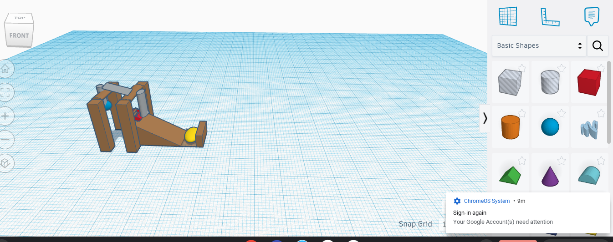

Week:2 This week we started to learn about mechanical engineering. We looked at
the different Types of engineering and some jobs that go with mechanical engineering.
On friday we did a challenge where we had to create an object on tinker cad.
I made a calculator and I am really proud of it!

Week 3: This week we continued to work on our tinker cad for our Rube Goldberg projects We need to make an almost exact replica of what we are going to later build. This means making sure measurements are corret and everything is to scale. This took up most of our class time and was a very tedious project. This week we also made sure that everyone's websites were working and accessable. My website never had any problems and everyhting was able to work smoohtly.
Week 4: This week we started to build our Rube Goldberg projects, we are building these projects in a groupd of four. we had to pick a tinker cad from our group to build. Our group choose to build my design. When building this machine we ran into some problems inclulding things such as our pillars not being strong enough, poorly cut peices, and general design flaws. We were able to make changes to the design and build a structure that will be strong enough to support the whole machine. We also made our deisgn smaller and cut out peices so that it will be more efficient and work more smoohtly. On friday we did a challenge where we had to make a boat out of a sheet of paper and make is flout with wieghts. My groups boat sunk immediately which was honestly not surprising.
Week 5: This week we finished working on our Rube Goldberg projects. Our
original plan was to hold the baseball and then drop it to activate the machine.
Then we realised that we needed to have a hands off start, so we had to make some
changes to the machine. We made a platform that would hold the ball up with out
having the ruler raise, then when we removed a string holding up the platform the
ball would drop, releasing the ball and activating the machine. This system worked
really well. In the second half of class on wednesday we tested out project.
My groups machine worked the first try. Other groups are testing on friday, and it
is really cool to see what everyone came up with.

Week 6: This week I was absent pretty much all week so I didnt get to do much in engineering class. I was there on friday, so in class on friday we finished disecting a computer and then put the computer back together. Putting the computer back together was pretty simple, we followed the inscruction but we did hit a problem. WE did not know which screws went where, and we figured thsi out after we finished putting the computer together ebcuase there were bumps in the frame. We went back in and fixed it as best we could. It was really cool to see the insides of a computer.

Week 7: This week we learned about Bioengineering. On Monday we learned what Bioengineering is and what types of jobs are in the bioengineering feild. There are really cool jobs such as building prosthetics for poeple who have lost limbs. We also learned that bioengineers can work in the medical feild for the medical devices. On wednesday we looked at prosthetics sepcifically for animals. We picked an animal and what they were missing and then we were supposed to design a prosthetic on tinker cad for that animal. We had to be specific in what materials it was made of and if those materials were animal safe. We also had tho think about how it would attatch to the animal. Lastly, on friday we did a challenge where we had to create a set of instructions for how to make a PB+J sandwich. I learned that we had to be very specific in what out directions said and that you have to assume that the person/machine following your instructions does not know what they are doing. I though my instructions were pretty good but they were missing important parts such as opening the bag of bread.